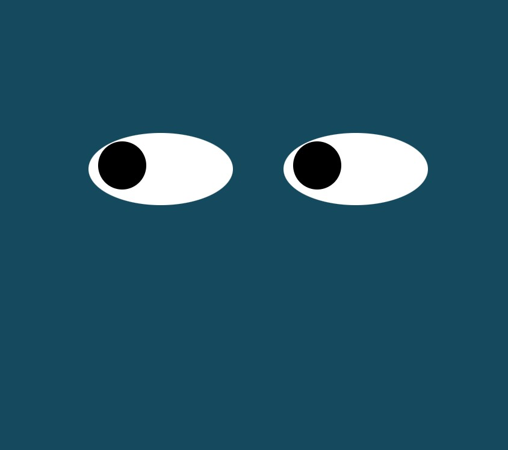

Module 8. Eye Movement Exercise.
This assignment was an exercise in using Javascript in combination with CSS. Both eyes are designed to follow the cursor as it navigates across the screen.

This assignment was an exercise in using Javascript in combination with CSS. Both eyes are designed to follow the cursor as it navigates across the screen.